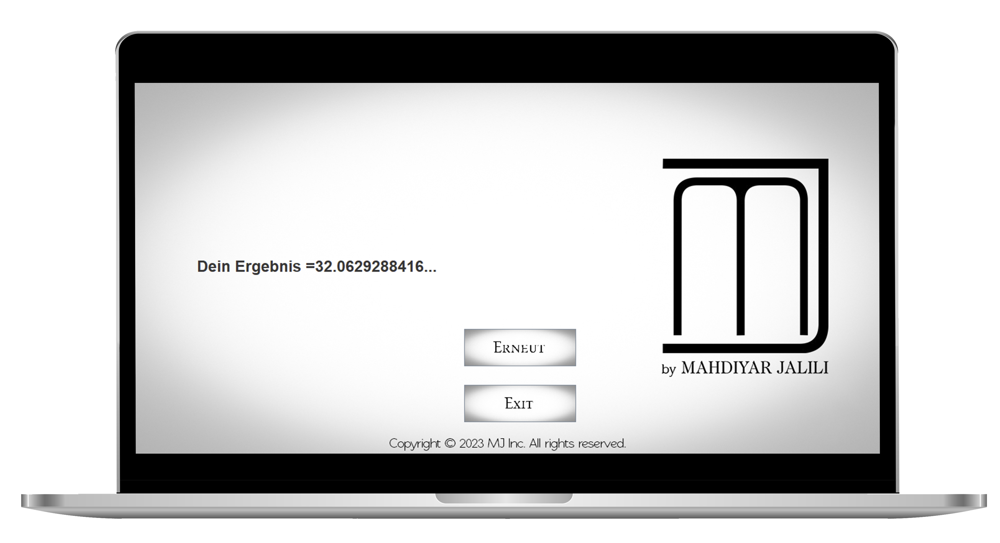

new dimension
TYPE PRO v1.0

We hereby introduce Type Pero version one,
complex texts with very complex words were integrated
To challenge the user's reaction speed, the app refers to advanced 10 fingers
System writers
A friendly and beautiful graphical user interface has been created, giving you a general overview of the app
Important features
1. Hundreds of very complex texts with complex words were integrated
2. The lyrics are on different topics so you don't get bored with one.
3. For those who want to write faster and faster and want to train this is the best choice.
4. At the end it will automatically show how fast you wrote (words per minute).
important to know,
If you are a beginner and want to learn 10 Finger System from the beginning,
you will probably get bored with this app because Type Pro is not an education app
but a professional app for legendary 10 Finger System writers
Your result will be displayed exactly so that you can see more precisely how far you have progressed. Quite elegantly, your result is automatically output in the usual unit of words per minute.
